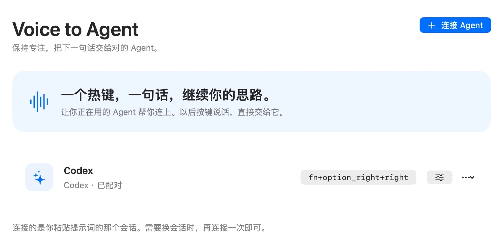

CREATOR OPS工作台原型

常规咨询走规则，退款与改期带上下文转人工。
↗达人合作 / 人机分工
Creator OPS
达人合作管理工作台
脱胎于一线达人合作交付的真实痛点。针对沟通散在私信与表格、运营反复回复同类问题的情况，设计人机分工工作台：标准咨询按规则消化，退款、改期等例外事项自动汇总前序对话生成待办，让人只处理需要拍板的环节。

SELECTED WORK / 精选工作
先查清底层规则，再决定哪里该写工具。
达人合作 / 人机分工
脱胎于一线达人合作交付的真实痛点。针对沟通散在私信与表格、运营反复回复同类问题的情况，设计人机分工工作台：标准咨询按规则消化，退款、改期等例外事项自动汇总前序对话生成待办，让人只处理需要拍板的环节。
 ↗
↗系统规则 / 接口验证
网店反复出现「前台有货、后台发不出」的库存错乱。逐项核对 Cin7 库存系统与 Shopify 网店的订单流、库存字段和接口返回，定位出核心规则冲突：前台展示读的是全仓汇总库存，订单分配却只扣所属分支仓。

↗交互定义 / AI 工具
同时开多个终端和 AI 会话时，切窗口、复制粘贴很容易把指令发错地方。做了一个 macOS 语音工具：把独立热键预先绑定到指定 Codex 会话，按下说话转文字后直达目标窗口，免去反复切换和找会话。
EXPERIENCE & APPROACH
先拆清规则，
再上工具。
跨境电商运营和达人合作，是我接触系统问题的起点。很多卡点不在某个软件本身，而是发生在工具与工具的接口之间、以及人与人的交接缝隙里。
我习惯从一条具体私信、一张异常订单或一次重复操作切入：先分清哪些能固化成规则、哪些必须留给人工拍板，再用原型、页面或 Agent 把确定性环节接管掉，最后回到真实记录里核对输出。
梳理评价来源、去重、选品到发布前检查的完整流程，把重复人工环节拆成 Agent 任务，负责需求定义与结果验收。
拆解预约、到店、发布、原片回收与退款五个节点，定清合作边界并盯紧各环节交付——也是 Creator OPS 的业务原型来源。
正在关注：AI 应用落地、业务流程优化，以及偏实施与交付的 FDE 岗位
能钻进业务现场定规则，也能带着 AI 把工具真正做出来。
扫码添加微信，点击可查看原图。

LET’S TALK
如果你的团队正在解决业务与系统之间的具体卡点，欢迎直接聊。
GitHub ↗